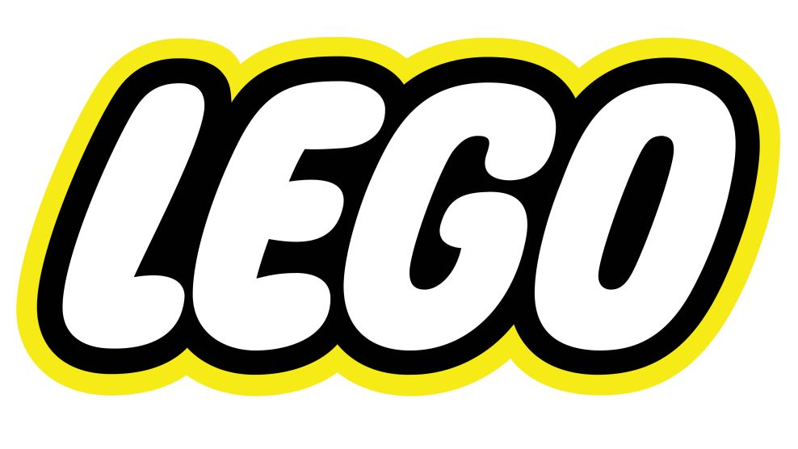
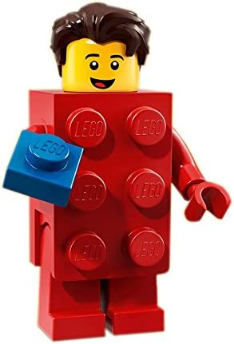

레고는 창의적인 놀이와 상상력을 자극하는 대표적인 장난감 중 하나입니다. 레고 홈페이지에서는 레고를 가지고 노는 방법에 대한 다양한 아이디어와 가이드가 제공됩니다.
먼저, 레고 홈페이지에서는 레고 브릭과 미니피규어를 사용하여 다양한 모델을 만드는 방법에 대한 가이드가 제공됩니다. 다양한 테마와 난이도에 따라서 모델을 만들어볼 수 있으며, 새로운 아이디어와 디자인을 만들어내는 것도 가능합니다.
또한, 레고 홈페이지에서는 레고 브릭을 사용하여 게임을 만들고 놀이를 즐기는 방법도 제공됩니다. 다양한 테마와 게임 방식을 선택할 수 있으며, 레고를 가지고 직접 만든 게임을 즐길 수도 있습니다.
레고 홈페이지에서는 또한 레고를 가지고 다양한 예술 작품을 만드는 방법도 제공됩니다. 예를 들어, 레고 아티스트들이 만든 다양한 작품을 감상하고, 그들의 작품에서 영감을 받아 자신만의 작품을 만들어볼 수 있습니다.
마지막으로, 레고 홈페이지에서는 레고를 사용하여 교육적인 경험을 제공하는 방법도 제공됩니다. STEM 교육과정과 관련된 다양한 활동과 가이드가 제공되며, 아이들은 놀이를 통해 과학, 기술, 공학, 수학 등의 분야에 대한 흥미와 지식을 키울 수 있습니다.
이렇게 다양한 방법으로 레고를 가지고 놀이와 교육적인 경험을 즐길 수 있습니다. 레고 홈페이지에서는 이외에도 다양한 아이디어와 가이드가 제공되므로, 더 많은 새로운 방법을 찾아보시길 추천합니다.